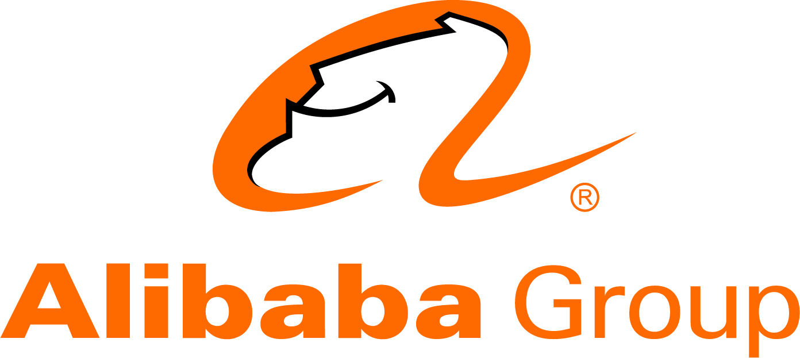

Success Stories
Gulbarga, is a city in the Indian state of Karnataka, India. It is the administrative headquarters of the Gulbarga district and a major city of the North Karnataka region. Explore things to do, places to visit, best time to visit, how to reach, history & culture of Gulbarga to plan your trip.

Instagram, the globally famous photo app, was founded by Stanford University graduate, Kevin Systrom who was born in a very common family and was a tech genius. He was in school when he was introduced to tech and used to learn coding by himself at night. He started working on an app which was more or less a cross between Foresquare and Flickr. Very few people know that Mark Zuckerburg wanted to hire him while he was undergraduate but he denied the offer as he wanted to complete his degree. Kevin, along with his friend Mike, spent eight weeks aggressively on developing this app And finally on the night of October 6, 2010, they pushed the launch button! Only after two hours of Instagram going LIVE, its servers started falling down because of rush of traffic and within 24 hours it became #1 app on iOS. Within nine months, Instagram had a record-breaking 7 million users, which also included some of the highly-influential tech-loving celebrities like Justin Bieber and Ryan Seacrest.
PAYTM
Two words that come to almost every Indian’s mind while Shopping, Post demonetization, are “Paytm karo.” Paytm has brought a paradigm shift in the retail industry by completely transforming the payment methodology. Initially, this online wallet cum e-commerce website was used to make payments for limited utilities like mobile and DTH recharge and shopping bills. Over the years, this portal has expanded its scope and has brought about anything and everything under the ambit of its operations. Customers now can recharge their metro card, pay bills for utilities like electricity and water, transfer funds to other bank accounts, book flight/train/bus tickets, make hotel reservations, etc. Now the latest Paytm Succes Story is everexpanding with the addition of e-retail and m-commerce stores. This gives the option to small vendors to list their products on the website and allows them to expand their customer base
OLA
The 29 year old IIT–B Grad – Bhavish Aggarwal is the founder & CEO of India’s most popular Cab Aggregator OlaCabs. OlaCabs, more popularly known as Ola, is just like any other marketplaces online, but more specifically into providing Taxi services. Ola, which started as an online cab aggregator in Mumbai, now resides in the Silicon Valley of India a.k.a. Bangalore, and is also known to be one of the fastest growing businesses in India, out-beating its competitors Uber & Meru. Coming back to the man behind Ola; simple yet charming Bhavish, with the success of his prodigy has certainly become the talk of the town. But even after becoming a millionaire, he still prefers to not buy a car and take a cab (to set an example, we presume), certainly doesn’t goes down well with his wife. He believes that, such is a small price that every entrepreneur has to pay. Anyways, when not crushing his competitors, one can catch Bhavish cycling, playing squash or doing what he loves the most – photography. He also maintains a largely popular photoblog!

Born on the 24th of Feb 1976; Jan Koum is the Co-founder and CEO of the globally famous mobile messaging application – WhatsApp. WhatsApp was recently acquired by Facebook in February 2014 for a whooping $19 Billion. In 2014, with an estimated worth of more than $7.5 Billion, he was listed as the 62nd richest person in America by Forbes. To add to that, Forbes also stated in another article that, Jan’s prodigy would also be the sole reason behind the loss of a combined total of $386 billion that will be incurred by the telecommunications industry between 2012 and 2018! Nevertheless, the story of WhatsApp is yet another live example of innovation in true terms, for everyone out there waiting for motivation. But Jan is no stranger to failure, and is a founder who had to go through his fair share of rejection by top tech companies, including the one that eventually bought their service, only to become the most valuable messaging platform on the planet. Let’s tell you a tale which best exemplifies the phrase “try, try, try, till you succeed”!
Alibaba.com

The story of Alibaba founder, Jack Ma is a total rags-to-riches story. Jack was born poor in communist China, failed his university entrance exam twice and was rejected from tonnes of jobs including KFC. He had no knowledge of internet or coding but was captivated by the internet he first time used it. He started two internet ventures which failed miserably, and after four years of that, he finally started alibaba.com. He gathered all of his connections and convinced them to invest in his vision. It started attracting customers and Ma is now the richest man in China.
Uber
Uber was born out of the situation when its founder Travis Kalanick couldn't find a cab in Paris to get to a conference. He envisioned it as a way to lower the cost of black-car service at the touch of a button. After two previous failed start up ventures, it was difficult for Kalanick to convince the investors to believe in him but as soon as Ubercab launched in San Francisco, it became a huge hit! After SF, they went on to expand Uber to other US cities and internationally, first country being Paris. Uber is currently valued at USD 69 billion, making it the most valuable privately held tech company in the world. All of these stories have different timings and circumstances but one common lesson, Hold onto your dreams, you always start small!
Airbnb
Two people who were struggling to pay their rent after moving to a different city, saw an opportunity of offering bed and breakfast on a minimal price and bam! got their first Airbnb customer, a 30-year-old Indian man. The company didn't take off immediately, the founders had to sell cereal boxes for at least six months to get the company afloat. After several rejections, it received its first funding of USD 112 million, and the rest is history.